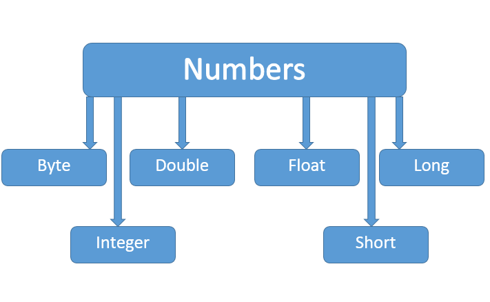

TreeviewCopyright © all right reserved, powered by aleen42
第十章：Number & Math 类
一般地，当需要使用数字的时候，我们通常使用内置数据类型，如：byte、int、long、double 等。
int a = 5000;
float b = 13.65f;
byte c = 0x4a;
然而，在实际开发过程中，我们经常会遇到需要使用对象，而不是内置数据类型的情形。为了解决这个问题，Java 语言为每一个内置数据类型提供了对应的包装类。
所有的包装类（Integer、Long、Byte、Double、Float、Short）都是抽象类 Number 的子类。

这种由编译器特别支持的包装称为装箱，所以当内置数据类型被当作对象使用的时候，编译器会把内置类型装箱为包装类。相似的，编译器也可以把一个对象拆箱为内置类型。Number 类属于 java.lang 包。
下面是一个使用 Integer 对象的实例：
public class Test{
public static void main(String args[]){
Integer x = 5;
x = x + 10;
System.out.println(x);
}
}
以上实例编译运行结果如下：
15
当 x 被赋为整型值时，由于x是一个对象，所以编译器要对x进行装箱。然后，为了使x能进行加运算，所以要对x进行拆箱。
1. Java Math 类
Java 的 Math 包含了用于执行基本数学运算的属性和方法，如初等指数、对数、平方根和三角函数。
Math 的方法都被定义为 static 形式，通过 Math 类可以在主函数中直接调用。
以上实例编译运行结果如下：
90 度的正弦值：1.0
0度的余弦值：1.0
60度的正切值：1.7320508075688767
1的反正切值： 0.7853981633974483
π/2的角度值：90.0
3.141592653589793
2. Number & Math 类方法
下面的表中列出的是 Number & Math 类常用的一些方法：
| 序号 | 方法 | 描述 |
|---|---|---|
| 1 | xxxValue() | 将 Number 对象转换为xxx数据类型的值并返回。 |
| 2 | compareTo() | 将number对象与参数比较。 |
| 3 | equals() | 判断number对象是否与参数相等。 |
| 4 | valueOf() | 返回一个 Number 对象指定的内置数据类型 |
| 5 | toString() | 以字符串形式返回值。 |
| 6 | parseInt() | 将字符串解析为int类型。 |
| 7 | abs() | 返回参数的绝对值。 |
| 8 | ceil() | 返回大于等于( >= )给定参数的的最小整数，类型为双精度浮点型。 |
| 9 | floor() | 返回小于等于（<=）给定参数的最大整数 。 |
| 10 | rint() | 返回与参数最接近的整数。返回类型为double。 |
| 11 | round() | 它表示四舍五入，算法为 Math.floor(x+0.5)，即将原来的数字加上 0.5 后再向下取整，所以，Math.round(11.5) 的结果为12，Math.round(-11.5) 的结果为-11。 |
| 12 | min() | 返回两个参数中的最小值。 |
| 13 | max() | 返回两个参数中的最大值。 |
| 14 | exp() | 返回自然数底数e的参数次方。 |
| 15 | log() | 返回参数的自然数底数的对数值。 |
| 16 | pow() | 返回第一个参数的第二个参数次方。 |
| 17 | sqrt() | 求参数的算术平方根。 |
| 18 | sin() | 求指定double类型参数的正弦值。 |
| 19 | cos() | 求指定double类型参数的余弦值。 |
| 20 | tan() | 求指定double类型参数的正切值。 |
| 21 | asin() | 求指定double类型参数的反正弦值。 |
| 22 | acos() | 求指定double类型参数的反余弦值。 |
| 23 | atan() | 求指定double类型参数的反正切值。 |
| 24 | atan2() | 将笛卡尔坐标转换为极坐标，并返回极坐标的角度值。 |
| 25 | toDegrees() | 将参数转化为角度。 |
| 26 | toRadians() | 将角度转换为弧度。 |
| 27 | random() | 返回一个随机数。 |
3. Math 的 floor,round 和 ceil 方法实例比较
| 参数 | Math.floor | Math.round | Math.ceil |
|---|---|---|---|
| 1.4 | 1 | 1 | 2 |
| 1.5 | 1 | 2 | 2 |
| 1.6 | 1 | 2 | 2 |
| -1.4 | -2 | -1 | -1 |
| -1.5 | -2 | -1 | -1 |
| -1.6 | -2 | -2 | -1 |
floor,round 和 ceil 实例：
public class Main {
public static void main(String[] args) {
double[] nums = { 1.4, 1.5, 1.6, -1.4, -1.5, -1.6 };
for (double num : nums) {
test(num);
}
}
private static void test(double num) {
System.out.println("Math.floor(" + num + ")=" + Math.floor(num));
System.out.println("Math.round(" + num + ")=" + Math.round(num));
System.out.println("Math.ceil(" + num + ")=" + Math.ceil(num));
}
}
以上实例执行输出结果为：
Math.floor(1.4)=1.0
Math.round(1.4)=1
Math.ceil(1.4)=2.0
Math.floor(1.5)=1.0
Math.round(1.5)=2
Math.ceil(1.5)=2.0
Math.floor(1.6)=1.0
Math.round(1.6)=2
Math.ceil(1.6)=2.0
Math.floor(-1.4)=-2.0
Math.round(-1.4)=-1
Math.ceil(-1.4)=-1.0
Math.floor(-1.5)=-2.0
Math.round(-1.5)=-1
Math.ceil(-1.5)=-1.0
Math.floor(-1.6)=-2.0
Math.round(-1.6)=-2
Math.ceil(-1.6)=-1.0